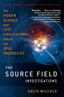
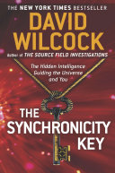
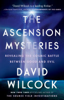

Researcher Profile
David Wilcock
Author, lecturer, media personality, and disclosure-movement figure whose work linked ancient mysteries, consciousness, UFO secrecy, ascension, and hidden-history narratives.
Visual Archive



Why He Belongs in the Archive
David Wilcock belongs in Corpus Nexus because his work sits at the crossing point of many themes already in the archive: lost civilizations, hidden knowledge, suppressed technology, disclosure, spiritual warfare, consciousness, and claims of a coming transformation of humanity.
His material is influential in modern alternative-history and disclosure communities, but it should be handled with careful labels. Some parts are biographical or bibliographic facts. Some are spiritual interpretation. Some are speculative claims that need strong evidence before being treated as historical reality.
Major Themes in His Work
Documented Work
Disclosure and UFO Secrecy
Wilcock became known as a voice in the disclosure movement, arguing that governments and hidden institutions possess information about extraterrestrial life, advanced technology, and secret programs that has not been fully revealed to the public.
Documented Work
The Source Field Investigations
His book The Source Field Investigations explored the idea of a universal field connecting matter, energy, life, consciousness, and spiritual development. The book helped establish his public identity as a bridge between alternative science, ancient mystery traditions, and metaphysics.
Documented Work
The Synchronicity Key
In The Synchronicity Key, Wilcock connected history, cycles of time, synchronicity, astrology, and symbolic patterns. The central idea was that personal lives and world events may follow repeating archetypal structures rather than random accident.
Documented Work
The Ascension Mysteries
The Ascension Mysteries brought together Wilcock's themes of spiritual transformation, cosmic conflict, extraterrestrial contact, hidden insiders, and the possibility of an approaching change in human consciousness.
Interpretive
Ancient Civilizations and Hidden Knowledge
Wilcock frequently connected ancient monuments, mystery schools, sacred symbolism, and alternative archaeology to the idea that humanity inherited fragments of a larger lost wisdom tradition.
Speculative
Insiders, Secret Programs, and Cosmic Conflict
A large part of his later work depended on insider testimony, whistleblower claims, and spiritual narratives about hidden conflict between benevolent and hostile forces. These claims are important to document as cultural influence, but they require separate verification.
Speculative
Project Looking Glass
Wilcock discussed Project Looking Glass as part of disclosure lore: an alleged machine or psychic amplifier capable of displaying probable future events. This connects his work to claims about timeline convergence, hidden technology, and elite attempts to forecast or steer history. See also: Project Looking Glass.
Connection to Satan's Little Season
Wilcock did not need to be a "little season" teacher for his work to connect with that research path. His themes overlap with modern little-season discussions through claims of mass deception, erased history, hidden rulers, spiritual conflict, disclosure, suppressed technology, and the possibility that humanity is living inside a managed false reality.
Death and Disputed Claims
Documented
Death in Colorado
David Wilcock died near Nederland, Colorado, on April 20, 2026, at age 53. Reports citing Boulder County officials and his family described the death as suicide after deputies responded to a mental health crisis call.
Documented
Family Statement
His family later described a long struggle with depression and serious financial difficulties. They also asked the public to remember his humanity and not reduce his life only to controversy or speculation.
Reported Claim
"I Plan on Living"
After the news spread, an older social media post resurfaced in which Wilcock reportedly said he was not suicidal and planned on living. Supporters pointed to that statement as a reason to question the official account.
Disputed
Why It Became an Archive Question
The circumstances became part of modern disclosure lore because Wilcock had recently discussed missing or dead scientists connected in public speculation to space, nuclear, and classified research. This timing fueled questions among followers, while official and family statements pointed to mental health and financial distress.
Caution
How to Handle This Claim
Corpus Nexus should record both layers: the official/family account and the public skepticism around his prior statement. The existence of a prior statement does not, by itself, prove foul play; it shows why the death became contested in the communities that followed his work.
Research Notes
Track his books, lectures, Divine Cosmos articles, YouTube appearances, Gaia material, and interviews separately. Mark whether a claim comes from a published book, a public lecture, an alleged insider source, a personal spiritual claim, or later commentary by followers.
Suggested archive labels: documented publication, public claim, disputed claim, spiritual interpretation, unverifiable insider claim, and cultural influence. This keeps the page fair to his impact while avoiding the mistake of treating every claim as proven.
Sources to Verify
Start with his official Divine Cosmos archive, publisher pages for his books, and reputable reports about his public career. Then compare those with critical sources, interviews, and primary videos before making stronger claims.
Open Questions
Which parts of Wilcock's work were research, which were spiritual interpretation, which were insider narratives, and which became modern myth because they gave people a language for hidden history?